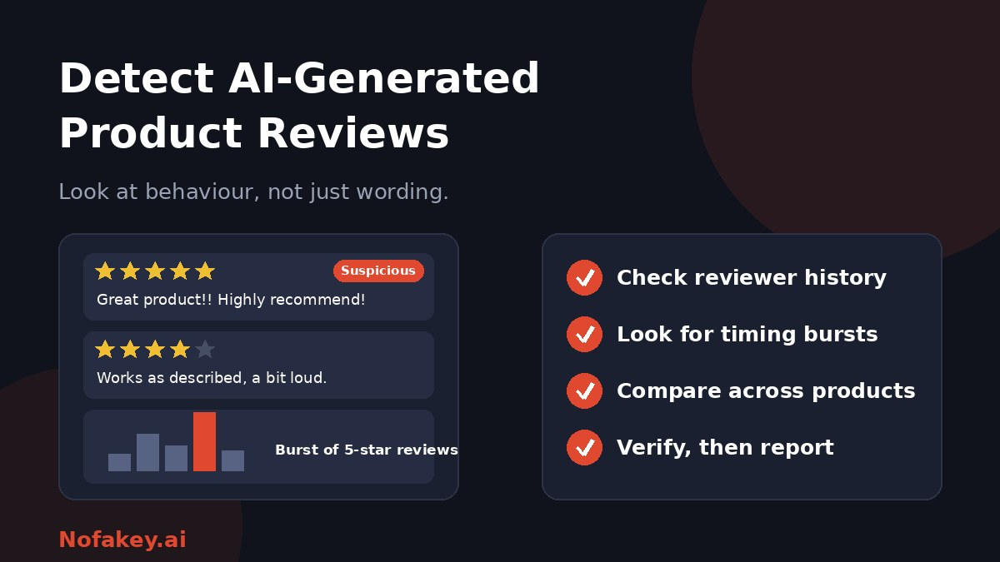

Reviews drive buying decisions, which makes them a target. AI tools let anyone write hundreds of believable reviews in minutes, and shoppers, sellers and platforms all need ways to tell what is real. The catch is that review text is short and often generic, so spotting AI by wording alone is unreliable. This guide covers what works for shoppers and for ecommerce teams.
Why AI-generated reviews are a problem
- Scale and speed. One person can generate large numbers of varied, fluent reviews cheaply.
- Trust. Shoppers rely on reviews, so manipulated ratings mislead them and hurt honest sellers.
- Hard to spot. Research has found that people often struggle to tell AI-written reviews from human ones.
- Sensitive categories. Fake reviews on health, baby or safety products can cause real harm.
AI-written is not always fake
A real customer might use AI to polish an honest review, especially if English is not their first language. A fake review, on the other hand, can be typed by hand. So the real question is about authenticity: did a genuine customer have the experience, and is the opinion honest and free of undisclosed rewards?
| Case | Typical view |
|---|---|
| Real buyer, honest opinion, AI used to polish wording | Often acceptable, depending on platform rules |
| No purchase, AI invents an experience | Fake review |
| Seller or paid service posts glowing reviews | Fake review and likely against consumer rules |
| Review written for a reward, not disclosed | Misleading, and may break platform and legal rules |
| Competitor posts fake negative reviews | Fake review |
Red flags for shoppers
In the wording
- Generic praise that could describe any product, with no concrete detail about use.
- Overly polished or structured writing, with tidy paragraphs and empty descriptors.
- Repeated full product names or model numbers inserted unnaturally.
- No downsides at all, or extreme praise or criticism with no explanation.
- Mismatch with the product, such as describing features it does not have.
In the pattern
- A burst of similar five-star reviews in a short window, especially for a new product.
- Reviewers with thin histories: new accounts, a single review, or reviews only for one brand.
- Similar phrasing across different reviews or across different products.
- Rating distributions that look unnatural, such as almost all top ratings with very few middle ones.
- Reviews that do not fit the photos or video that the reviewer posted, or stock-like images.
Example (made up)
"This amazing product exceeded all my expectations. The quality is outstanding and the design is sleek. I would highly recommend the AeroPure X300 to anyone."
Why it raises questions: generic praise, no real use detail, and the full model name worked in. On its own this proves nothing, but if ten similar reviews appear in one day, it is worth a closer look.
Treat any single clue as a reason to be cautious, not as proof. Our guide on whether AI detectors are accurate explains why.
What shoppers can do
- Read the middle ratings first. Three and four-star reviews often contain the most useful detail.
- Look for specifics: how long it was used, what went wrong, photos taken by the buyer.
- Check reviewer profiles for history and variety.
- Sort by newest and check the timing. Sudden surges deserve suspicion.
- Compare with other sources: independent reviews, forums and the seller's own reputation.
- Report suspicious reviews using the platform's reporting tool.
- Pause before buying if the rating seems too good to be true and the evidence is thin.
How ecommerce teams can detect AI-generated reviews
For platforms and stores, text analysis alone is weak because reviews are short. Layer several signals.
| Signal | What to look at |
|---|---|
| Purchase verification | Was the review tied to a real order, and is the buyer's history consistent? |
| Account behaviour | Account age, review velocity, variety of products reviewed |
| Timing patterns | Bursts of reviews around launches, promotions or complaints |
| Duplicate and near-duplicate text | Same phrasing or structure across reviews, accounts and products |
| Network signals | Links between accounts, devices or sellers, handled within privacy rules |
| Media checks | Reused or synthetic photos attached to reviews |
| Text analysis | AI-likelihood scores as one input only, never the sole basis |
A fair moderation workflow
- Write clear review rules. Say what is allowed, including AI-assisted wording, and ban fake and paid-undisclosed reviews.
- Score risk using several signals, not one detector.
- Route high-risk reviews to a person for review before removal where practical.
- Check clusters, not just single reviews. Coordinated campaigns show up as patterns.
- Notify and allow appeals when a genuine customer's review is removed.
- Penalise sellers and services behind manipulation, not just the reviews.
- Log decisions and review error rates, so you know how many honest reviews you wrongly remove.
For sellers: protect your own reputation
- Do not buy, write or swap reviews. It can break platform rules and consumer law, and it damages trust.
- Ask real customers for honest reviews and follow your platform's rules on incentives and disclosure.
- Watch for attacks. Sudden waves of fake negative reviews may come from competitors, and can be reported.
- Keep records of suspicious activity when you report it.
- Be open about AI use in any content you publish. Our guide on how to label AI-generated content can help.
What about the law?
Many countries have consumer protection rules against fake or misleading reviews and against undisclosed paid endorsements, and some have updated them to cover AI-generated reviews. Rules differ and keep changing, so check the law and platform policy that applies to you. This guide is general information, not legal advice.
Related reading
Fake reviews are one form of AI-assisted deception. Read about deepfakes and how to protect yourself, and how editors handle similar questions in our guide on AI detectors for publishers and editors. If a seller message or offer looks suspicious, you can also paste it into our free checker for a quick first read.
Conclusion
You cannot reliably spot AI-generated product reviews by wording alone. The strongest evidence is behavioural: who wrote it, when, how often, and whether it matches a real purchase. Shoppers should read for detail and check patterns, and stores should combine verification, behaviour signals, text analysis and human review while treating honest customers fairly. Find more guides on the Nofakey.ai blog.
Frequently asked questions
Can you tell if a product review was written by AI?
Not reliably from the text alone. Reviews are short, and both people and detectors struggle with them. Behavioural clues, such as reviewer history, timing and rating patterns, are usually more useful.
What are signs of a fake AI review?
Generic praise with no real detail, repeated product names, unusually polished wording, bursts of similar five-star reviews, new or single-purpose accounts, and the same phrasing across different products.
Is every AI-written review fake?
No. A genuine customer may use AI to help phrase an honest review. What matters is whether the review reflects a real purchase and honest opinion, so policies should focus on authenticity and disclosure of incentives.
How can an ecommerce store detect AI-generated reviews?
Combine behavioural and account signals with text analysis and human moderation: purchase verification, reviewer history, timing patterns, duplicate detection and review of flagged cases.
Are fake reviews illegal?
Many countries have consumer protection rules against fake or misleading reviews and undisclosed incentives. Rules differ by country, so check the law that applies to you.
Got an offer or message you want a quick first read on?
Run it through the checker